Change the inputs改变输入
Swap images or joint states while holding the other inputs fixed. The initial policy shows weak image dependence; recorded-stream replay still advances with frozen images.分别替换图像或关节状态，固定其他输入。被诊断策略的图像依赖较弱；在冻结图像的记录流回放中，动作仍继续推进。
What does an imitation policy
actually use to act?模仿学习策略，
究竟依据什么行动？
Task success is only the beginning. We probe visual and joint-state dependence, then study what changes when we encourage a policy to use vision.任务成功，只是研究的起点。我们先诊断策略对视觉与关节状态的依赖，再研究增强视觉利用后，指令精度与反馈表现如何变化。
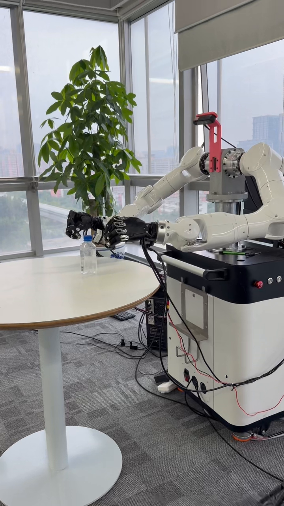
One hand stabilizes the bottle while the other grasps and turns the cap. Watch successful removal, an unsuccessful attempt, and repeated attempts with an eventual removal.一只手稳定瓶身，另一只手抓住并旋转瓶盖。演示包含成功取盖、未拧开的过程，以及反复尝试后最终取盖。
The clips document visible task outcomes. Model comparisons use the recorded-data evaluations below. Side-by-side views are independent recordings.片段记录可观察的任务结果。模型对照采用下文的记录数据评估；并排窗口来自独立录像。
Did visual information drive the action, or did familiar joint-state correlations help predict it? We begin by changing the inputs and measuring the response.动作是由视觉场景驱动，还是借助熟悉的关节状态关联进行预测？我们先改变输入，测量策略如何响应。
Swap images or joint states while holding the other inputs fixed. The initial policy shows weak image dependence; recorded-stream replay still advances with frozen images.分别替换图像或关节状态，固定其他输入。被诊断策略的图像依赖较弱；在冻结图像的记录流回放中，动作仍继续推进。
Tactile events provide an independent timing reference. Joint states vary at contact onset, so a strict lack of variation does not explain the observed behavior.触觉事件提供独立的时间参照。接触起始时关节状态存在变化，因此不能用“接触时状态完全不变”解释所观察的行为。
The diagnosed policy has no explicit action-history input or recurrent state. This excludes direct action-history copying, while leaving state-based movement regularities to investigate.被诊断策略没有显式动作历史输入或循环状态，排除了直接读取动作历史的通道；状态所包含的运动规律仍需进一步研究。
The next question接下来要问
Exploratory diagnosis uses an earlier collection with tactile contact timing. The controlled three-seed dropout study below uses a separate collection without tactile input.探索性诊断采用包含触觉接触时间参照的早期数据。下文三个训练种子的受控 dropout 实验使用另一套不含触觉输入的数据。
Motivated by the diagnosis, we hide encoder state during training to encourage visual use. In the controlled comparison, partial dropout increases visual reliance, command error, and left-hand replay amplification.由诊断发现出发，我们在训练中隐藏编码器状态，尝试增强视觉利用。受控对照发现，部分 dropout 同时提高了视觉依赖、指令误差与左手回放误差放大。
A larger share of the input response is attributed to images.图像在输入响应中所占的份额更大。
Predicted commands deviate more from the demonstrations.预测指令与示范指令的偏差更大。
Feeding predictions back as state magnifies offline replay error.以预测指令回填状态时，离线重放的误差放大更明显。
Percentages show relative changes from the no-dropout baseline: 100 × (dropout / baseline − 1). Each mini-chart uses its own scale.百分比表示相对无 dropout 基线的变化：100 ×（dropout / 基线 − 1）。每个小图使用各自的刻度。
The visual-response gain comes with a command-quality cost.
Evaluate input reliance, command fidelity, and feedback error together.视觉响应的提升伴随着指令质量的代价。
应联合评估输入依赖、指令保真度与反馈误差。

All three training-seed pairs show the same principal directions at both checkpoints. The right-limb effects are mixed. Circles are seed contrasts; diamonds and whiskers are aggregate contrasts and conditional 95% paired episode-bootstrap intervals. The checkpoints reuse the same training runs.两处检查点的三个训练种子对均呈现相同的主要变化方向；右侧肢体的变化并不一致。圆点为种子对照，菱形与误差线为汇总对照及条件 95% 配对轨迹 bootstrap 区间。两处检查点复用相同训练。
| Measurement测量项 | No dropout无 dropout | 50% dropout |
|---|---|---|
| Image response图像响应 DV | 0.05963 | 0.10426 |
| Encoder-state response编码器状态响应 DQ | 0.09240 | 0.00110 |
| Left-hand teacher-state peak error左手记录状态分支峰值误差 | 0.300 | 0.305 |
| Left-hand predicted-state peak error左手预测状态分支峰值误差 | 0.557 | 5.280 |
Image response itself rises; the reliance gain also reflects much weaker encoder-state response. Left-hand predicted-state error rises while its teacher-state error is nearly unchanged. Peak errors use the archived numerical residual. They and G follow separate aggregation paths, specified in the metric definitions below.图像响应本身确实上升；依赖占比的增长也包含编码器状态响应的大幅下降。左手预测状态分支误差增大，而记录状态分支误差基本不变。峰值误差采用归档数值残差，与 G 分别沿不同路径聚合，详见下方指标定义。
Joint state conditions the learned prediction and provides the reference for composing absolute commands. Dropout acts on the encoder path; the composition path remains active.关节状态既用于条件化模型预测，也作为合成绝对指令的参考。Dropout 作用于编码器路径，指令合成路径继续保留。

Three RGB views are encoded by a vision transformer. Image features and normalized joint state form the observation condition.视觉 Transformer 编码三路 RGB 图像，将图像特征与归一化关节状态组合为观测条件。
A conditional action transformer predicts a 16-step relative-action chunk. The current composition state is added to every step.条件动作 Transformer 预测 16 步相对动作块，将当前指令合成状态加到每一步。
During training, dropout replaces the whole encoder-state vector with a learned token. We evaluate input response, command fidelity, and feedback error separately.训练时，dropout 将整个编码器状态向量替换为可学习 token。分别评估输入响应、指令保真度和反馈误差。
With missing encoder state and matched images and latent draws, both replay branches predict the same increment. The composition path then carries previous error forward.在编码器状态缺失且图像、潜变量匹配时，两条重放分支预测相同的增量。指令合成路径仍会将已有误差向后传递。
Previous error + current residual已有误差 + 当前残差
An exact additive recurrence in ordinary coordinates, under the matched replay conditions described here.这是上述匹配重放条件下、普通坐标中的精确加性递推。
Three excerpts show successful removal, an unsuccessful attempt, and eventual removal after repeated attempts.三段完整录像节选，分别展示成功取盖、未能取盖，以及反复尝试后最终取盖。
The fingers grasp and turn the cap; the bottle opening becomes visible.手指抓住并旋转瓶盖，随后可见开放瓶口。
Manipulation continues, but the cap remains attached at the end of this recording.机器人持续操作，但到录像结束时，瓶盖仍附着在瓶口。
A continuous 102-second sequence condensed to 30 seconds. All intermediate attempts are retained; the middle runs at 7×.将连续 102 秒的过程压缩至 30 秒。中间尝试全部保留，中段以 7 倍速播放。
The fingers continue moving, but the cap remains attached. The contrast with successful removal makes the task outcome concrete. Our study examines three policy properties relevant to assessing such behavior: image response, command fidelity, and feedback error.手指持续运动，但瓶盖仍附着在瓶口。与成功取盖的画面对照，可以清楚看到任务结果的区别。我们的研究考察评估这类行为时需要关注的三项策略属性：图像响应、指令保真度与反馈误差。
The controlled dropout study establishes a response–error trade-off. The noise and ACT comparisons show how the observed pattern varies across interventions and architectures within their respective settings.受控 dropout 实验呈现出响应与误差之间的权衡。噪声与 ACT 对照则展示了在各自设置下，干预方式与架构变化所对应的不同结果。
Nine models share the collection, split, and training recipe. Input probes keep composition state fixed. Replay instead feeds predicted commands through both state paths while retaining the recorded images.九个模型共享数据集、划分与训练设置。输入探测时固定指令合成状态；重放时将预测指令回填至两条状态路径，同时保留记录图像。
The principal directions repeat across three seeds and two checkpoints. Intervals describe episode variation conditional on the trained models and donors; replay measures numerical error under fixed observations.主要变化方向在三个种子与两处检查点均重复出现。区间描述以已训练模型和替换样本为条件的轨迹间变异；重放测量固定观测下的数值误差。
Perturbing state and recomputing relative targets preserves the absolute target. In the existing matched pair, amplification and autoregressive peak error decrease in all eight limb–episode combinations.扰动状态并同步重算相对目标，可保持绝对目标不变。现有配对结果中，八个肢体—轨迹组合的放大系数与自回归峰值误差均降低。
One seed and two training episodes; the comparison measures the joint intervention. The image/state response ratio rises from 0.576 to 1.534. Teacher-state errors vary, including a right-hand increase from 0.059 to 0.152 on one episode.一个种子、两条训练轨迹，测量联合干预的效果。图像／状态响应比从 0.576 升至 1.534。记录状态分支误差变化不一，其中一条轨迹的右手误差从 0.059 增至 0.152。
Absolute-target ACT already responds to images in this comparison. Replay favors absolute targets in 8/8 cells at chunk length 16 and 4/8 at length 100, across checkpoint and temporal-ensembling settings.本对照中的绝对目标 ACT 已对图像具有响应。在不同检查点与时间集成设置下，动作块长度为 16 时，重放结果在 8/8 个评估单元中有利于绝对目标；长度为 100 时为 4/8。
One training seed, with repeated checkpoint and ensembling measurements. At chunk length 100, the absolute-target image/state response ratio is 2.04 and 2.35 across the two checkpoints.一个训练种子，在检查点和时间集成配置下重复测量。动作块长度为 100 时，两个检查点的绝对目标图像／状态响应比分别为 2.04 和 2.35。
Visual Reliance and Feedback Error
in Dexterous Imitation灵巧操作模仿学习中的视觉依赖与反馈误差
Anonymous manuscript · 8 pages · Revised 16 September 2026匿名文稿 · 8 页 · 2026 年 9 月 16 日修订
These definitions accompany the reported summaries in the downloadable CSV and the manuscript revised on 16 September 2026.以下定义对应可下载 CSV 中的结果汇总，以及 2026 年 9 月 16 日修订的文稿。
The main comparison is 50% versus 0% whole encoder-state dropout, with full-state input at evaluation and checkpoint 198. Each condition uses three training seeds. The collection contains 199 episodes from six recording stores: 157 for training and 42 held out. The two checkpoints reuse the same trained models.主对照为 50% 与 0% 的整体编码器状态 dropout，评估使用完整状态与检查点 198，每个条件包含三个训练种子。数据集来自六个记录存储，包含 199 条轨迹：157 条用于训练，42 条留出。两处检查点复用相同的训练模型。
Dᵥ and Dq measure command changes after swapping images or encoder state. Composition state and latent draws stay fixed. The ratio measures the relative share of command sensitivity attributable to the image swap. Semantic understanding and task completion require separate measurements.Dᵥ 与 Dq 衡量替换图像或编码器状态后的指令变化。指令合成状态与潜变量保持固定。该比值衡量图像替换引起的指令响应份额。语义理解与任务完成情况需要分别测量。
Prediction error against demonstrated absolute commands, scaled by per-joint command ranges estimated from training data. Lower values indicate closer agreement with the demonstrations.预测绝对指令相对示范指令的误差，按训练数据估计的逐关节指令范围缩放。数值越低，表示与示范越接近。
For each episode and inference repeat, G is the peak predicted-state replay error divided by the peak teacher-state replay error. The reported endpoint averages two inference repeats, takes the median across episodes, then averages the three training-seed endpoints. A ratio of aggregate G values is not a mean of seed-level ratios.对每条轨迹与每次推理重复，G 为预测状态分支的峰值误差除以记录状态分支的峰值误差。汇总时先平均两次推理重复，再取轨迹中位数，最后平均三个训练种子的端点。汇总 G 值之比不等于逐种子比值的平均。
Headline percentages use 100 × (dropout / baseline − 1): visual reliance +152.4%, command RMSE +8.4%, and left-hand G +663.6%. The reliance difference is +0.5974, or +59.7 percentage points; that is distinct from the +152.4% relative increase.首页百分比使用 100 ×（dropout / 基线 − 1）：视觉依赖 +152.4%，指令 RMSE +8.4%，左手 G +663.6%。视觉依赖的差值为 +0.5974，即 +59.7 个百分点，与 +152.4% 的相对增长不同。
| Visual-reliance difference视觉依赖差值 | [0.5707, 0.6231] |
|---|---|
| Command-RMSE ratio指令 RMSE 比值 | [1.0538, 1.1114] |
| Left-hand G ratio左手 G 比值 | [4.9721, 8.2862] |
Intervals describe episode variation conditional on the trained models, fixed donors, and observed collection. Training-population and new-session uncertainty lie outside this design. The CSV uses the rounded paper-table values for left-arm and right-limb amplification; other entries retain available aggregate precision.区间描述以已训练模型、固定替换样本和当前数据集为条件的轨迹间变异。训练总体与新采集场次的不确定性不在本设计的估计范围内。CSV 中左臂和右侧肢体的放大值采用文稿表格的舍入数值，其他项保留可用的汇总精度。
Replay retains recorded images and feeds predicted commands back as state to measure numerical error propagation through the command map. The archived wrapped residual uses mixed recorded units, so it is a numerical score rather than a physical-angle metric. Environment response, contact, servo dynamics, joint limits, and physical stability require interactive evaluation.重放保留记录图像，将预测指令回填为状态，测量指令映射中的数值误差传播。归档的环绕残差使用混合记录单位，因此属于数值评分，而非物理角度指标。环境响应、接触、伺服动力学、关节限位及物理稳定性需要交互式评估。
Videos document visible task outcomes and the sequence of attempts. Model identities are unassigned, so the clips support behavioral illustration; method-level success rates and trial-specific failure attribution require matched measurements. Side-by-side overview views are independent recordings. The retry excerpt retains the original continuous 0–102 seconds: 0–6 seconds at 1×, 6–90 seconds at 7×, and 90–102 seconds at 1×.视频记录可观察的任务结果与尝试过程。片段未分配对应的模型身份，用于行为展示；方法级成功率与单次失败归因需要配对测量。总览中的并排画面来自独立录像。重试片段保留原始连续 0–102 秒：0–6 秒为 1 倍速、6–90 秒为 7 倍速、90–102 秒为 1 倍速。
Consistency-noise and ACT comparisons each use one training seed, an earlier collection, and their own protocols and response metrics. Their results characterize the evaluated models and trajectories.一致性噪声与 ACT 对照各使用一个训练种子、更早的数据集，以及各自的协议与响应指标；结果描述相应被评估模型与轨迹的表现。
All 33 supplied recordings and the current research demos. Review copies preserve the full video sequence; audio and identifying file metadata are removed.完整收录当前提供的全部部署录像，以及本版研究演示。按场景浏览，查看完整过程，或下载原始文件。
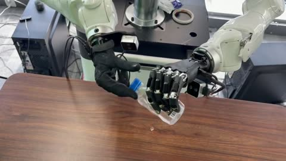
▷ Preview▷ 预览0:13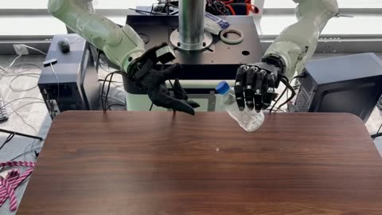
▷ Preview▷ 预览0:27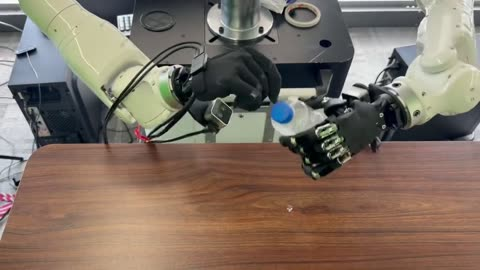
▷ Preview▷ 预览0:25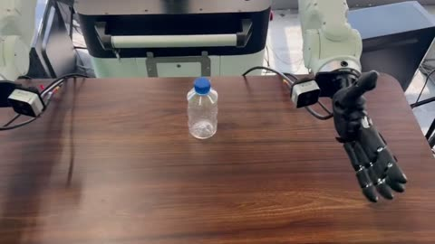
▷ Preview▷ 预览0:29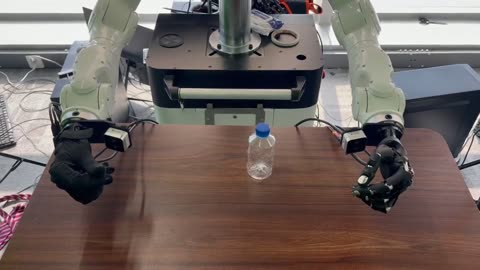
▷ Preview▷ 预览0:54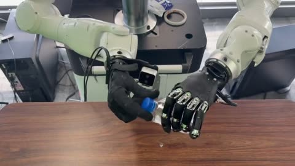
▷ Preview▷ 预览0:16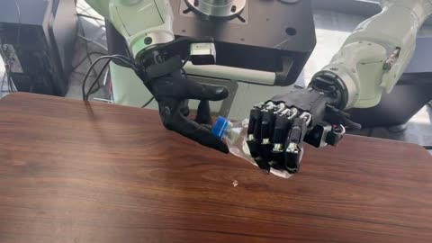
▷ Preview▷ 预览1:42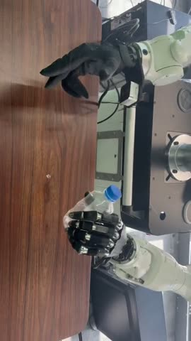
▷ Preview▷ 预览0:27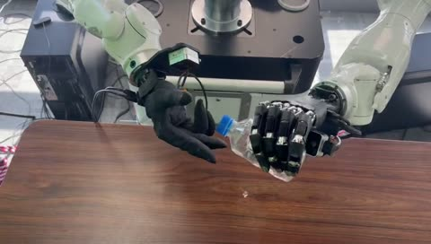
▷ Preview▷ 预览2:24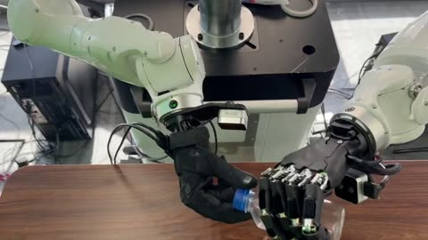
▷ Preview▷ 预览1:03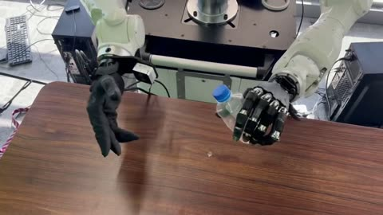
▷ Preview▷ 预览0:24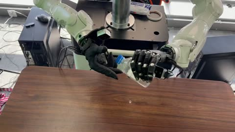
▷ Preview▷ 预览0:16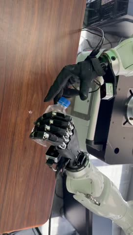
▷ Preview▷ 预览2:28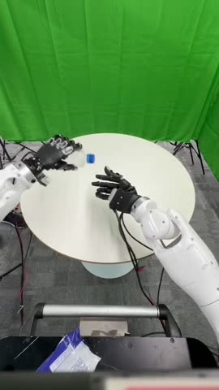
▷ Preview▷ 预览0:20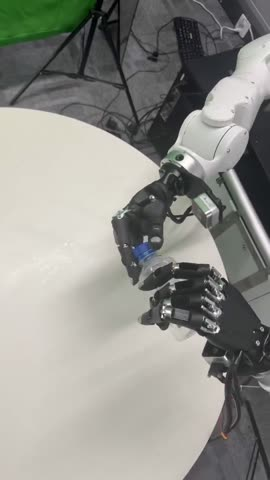
▷ Preview▷ 预览0:22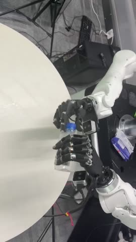
▷ Preview▷ 预览0:20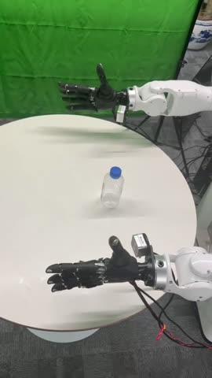
▷ Preview▷ 预览0:28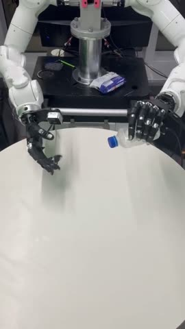
▷ Preview▷ 预览0:21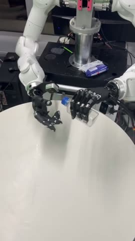
▷ Preview▷ 预览0:20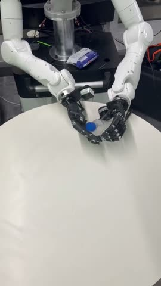
▷ Preview▷ 预览0:28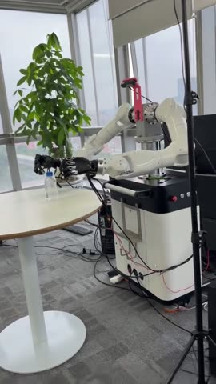
▷ Preview▷ 预览0:26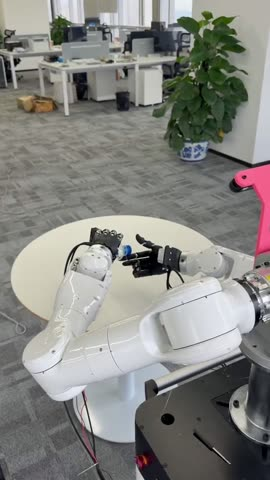
▷ Preview▷ 预览1:04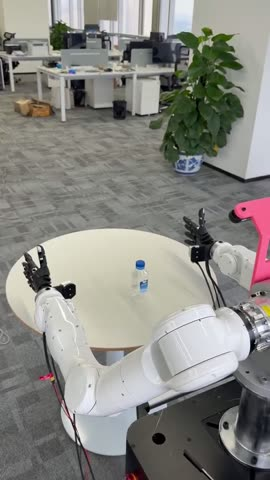
▷ Preview▷ 预览1:09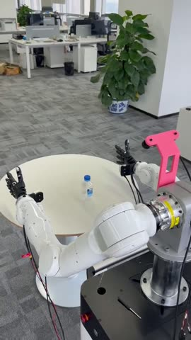
▷ Preview▷ 预览1:00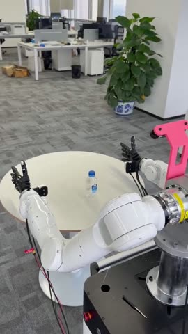
▷ Preview▷ 预览1:01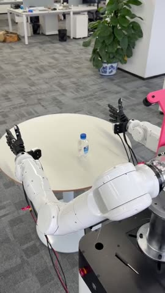
▷ Preview▷ 预览0:52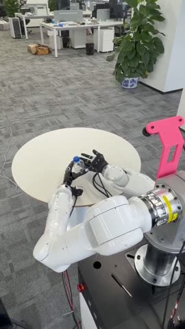
▷ Preview▷ 预览0:32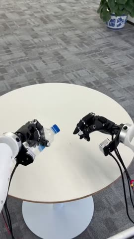
▷ Preview▷ 预览1:09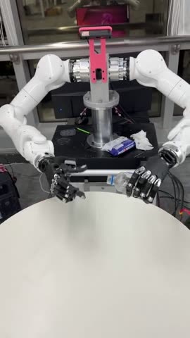
▷ Preview▷ 预览0:38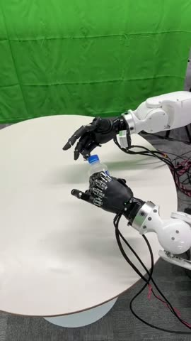
▷ Preview▷ 预览0:19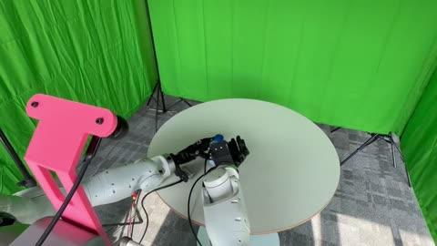
▷ Preview▷ 预览0:41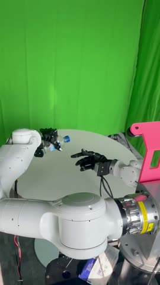
▷ Preview▷ 预览0:53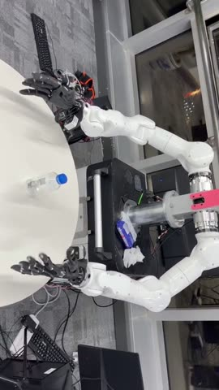
▷ Preview▷ 预览0:16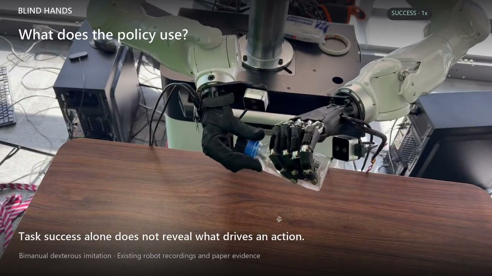
▷ Preview▷ 预览2:00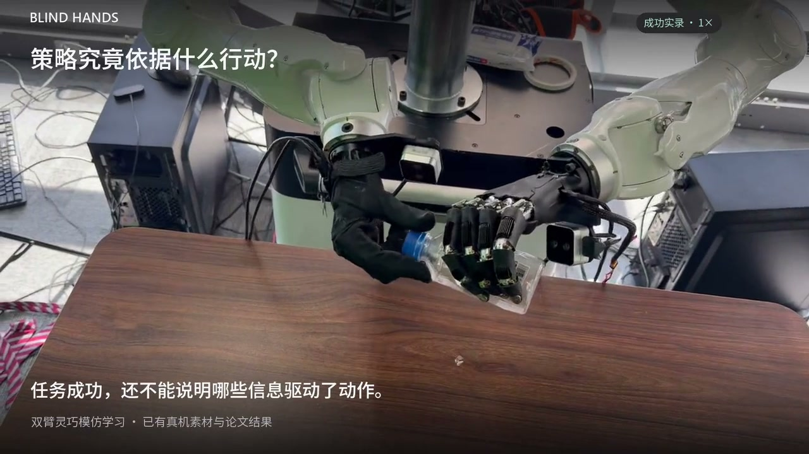
▷ Preview▷ 预览2:00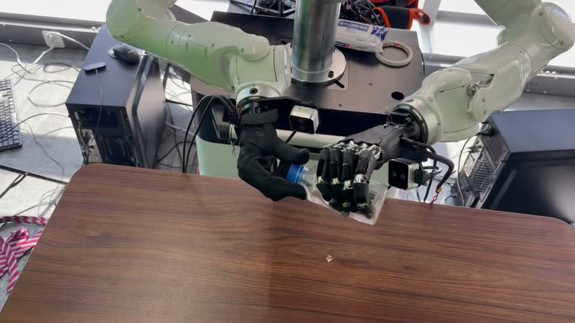
▷ Preview▷ 预览0:08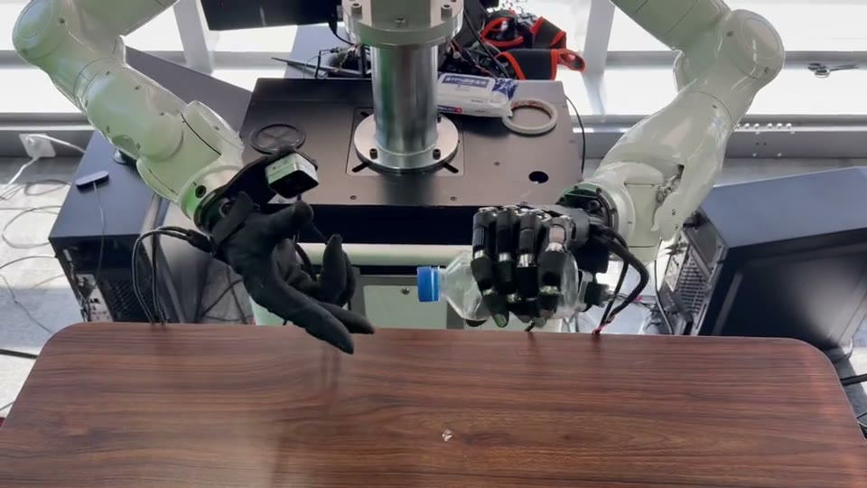
▷ Preview▷ 预览0:12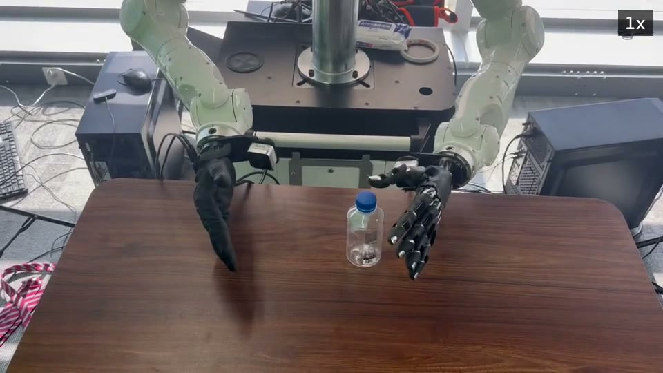
▷ Preview▷ 预览0:30Review downloads retain the complete video content at its original resolution. Full-length previews retain every video frame at 1× speed. Audio and identifying file metadata are removed from both. The edit timeline links the demos to their source recordings.审阅副本保留完整视频及原有分辨率；预览保留全部视频帧与 1 倍速。两者均移除音轨与文件身份元数据。剪辑时间线记录 demo 与源录像的对应关系。
Collection: 33 supplied recordings from the 12 August inventory. Files may contain related attempts or views; this is not a count of independent trials. Scene labels describe the setting. Model identities and experimental conditions remain unassigned.收录范围：8 月 12 日清单中的 33 段录像。不同文件可能包含相关尝试或视角，文件数不代表独立试验次数。分类仅描述拍摄场景，模型身份与实验条件尚未逐段标注。